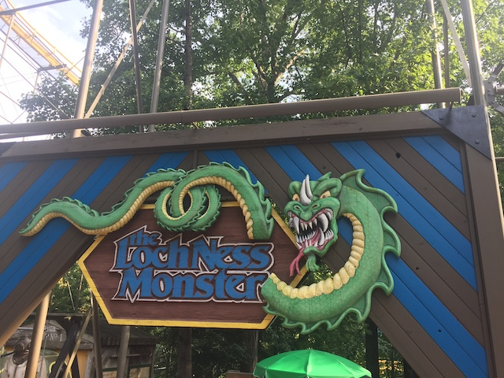

| |
Loch Ness Monster Review

We're here at Busch Gardens Williamsburg. Today's ride we'll be reviewing for you is Loch Ness Monster. Now this is an interesting ride in so many different ways. First of all, this may possibly be one of the most famous coasters of all time, and definetly is in the Top 10 for prettiest coasters ever. This rides beauty and fame mainly comes from one element. Interlocking Loops. Only 3 coasters ever had them, and only 1.5 are still left. Loch Ness Monster, Orient Express @ Worlds of Fun, and Lightning Loops @ Six Flags Great Adventure. Orient Express got scrapped (part of me says bummer, but I kept hearing CONSTANT negative reviews of that ride, and a POV makes me think that this thing was Gouderix bad. So...good riddance in that regard). And Lightning Loops got seperated and sold off. One half was sold off to Six Flags America before it eventually got scrapped. The other half became Diamondback @ Frontier City, which is still operational, and I managed to ride. But Loch Ness Monster is the only coaster in the world that still has interlocking loops. Which makes it a very fun and unique ride. With that said, enough chatting, more riding. Hop in the cars, pull down the OTSRs, and we're off! Dip out the station and turn above the pathway. Hello people down below! Go through a couple turns before we climb the lifthill. Head up the lifthill, getting a good view of Alpengeist, Griffon, and a lot of trees. Eventually, we reach the top, dip down, go around a turn, and head down the first drop. It's surprisingly big. Not huge or anything, but definately bigger than what you'd expect. So you get a decent amount of speed. Head up a decent-sized incline, and into a curved sort of hill. We lose some speed, but it's still good. Go down a small dip, turn a little, and rise up. We get a great view of trees, Alpengeist, Griffon, and what really makes this ride special. Its interlocking loops. We did back down and head right into a drop, gain some speed, and then go into the first loop. It's a good loop all on its own, having some nice forces. But....that visual element with the interlocking loops! DAMN!! That really is nice! Head up into another hill, go through another banked turn. Up another dip, and glide right into a midcourse brakes. Aww. Lame. I wanted our speed to continue. And from here, we waltz right into a tunnel. Hmm. I wonder what's in here. We turn and gain some speed. And we just continue that. Turning and turning, getting faster and faster, and all in the dark. Ooh. This is getting good. Eventually, we see daylight, break out of the tunnel and from our triple heix, and are in the light again! Head up into another dip, and then....climb another lifthill? Oh my god! I know exactly what this is! This is a big RCT coaster! This is one of those coasters that you'd see in the RCT Opening (Side note: Can someone please build one of those rides in real life!? I wanna ride Agorophobia & Claustrophobia in real life damn it!)! Seriously! It's visually impressive, has a cool, but clunky layout, and even has an awkward mid-ride lifthill! This is TOTALLY something that'd be pre-built in RCT. And I have no problem with that. =) Well, it's not a big lifthill. Dip down, go around a turn, and drop to the ground again! WEE!!! And look at that. We get to go through the other half of the interlocking loops! Seriously! These things are so cool! Why hasn't anyone made another ride with interlocking loops!? With so many amazing rides being built nowadays, you'd think that they'd just freaking make another one after the last one being made in 1980! Seriously, we're overdue! Hey China! Can one of your countless new coasters please feature interlocking loops!? That would really be appreciated. Well, that was awesome. Head up into another curved hill, and....we glide right into the brake run. Aww. Lame that it's over. But in all honesty, this really is a fun ride. One of the most unique layouts that Arrow has ever made, and is just an all around really fun ride. Not to mention, this ride is smooth as glass. Love this ride. Hope they have more rides like this built in the future. But for now, check out Loch Ness Monster. It's a really good ride.
7/10
Location: Busch Gardens Williamsburg
Opened: 1978
Built by: Arrow
Last Ridden: July 26, 2019
Loch Ness Monster Photos



Home
|